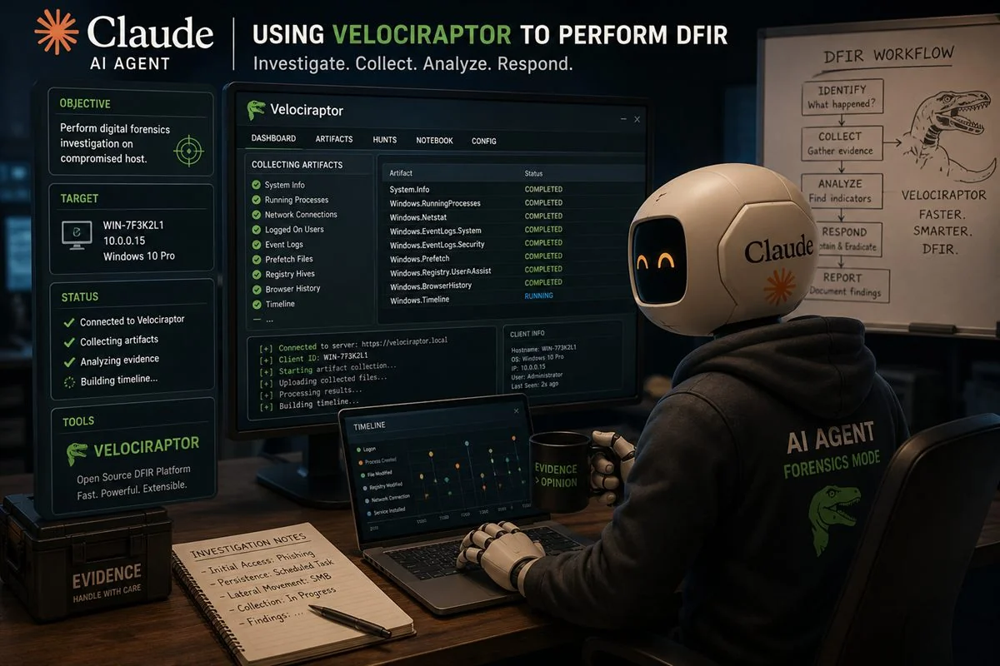
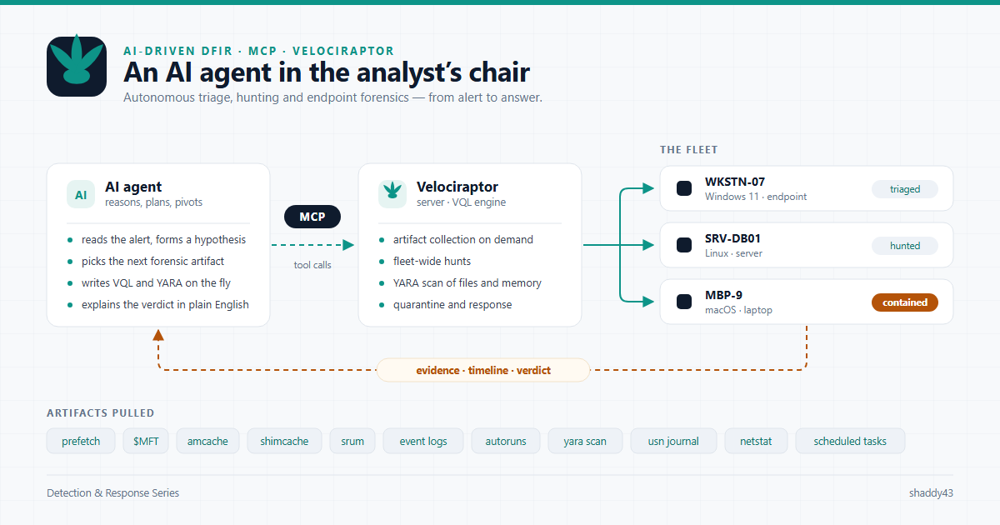
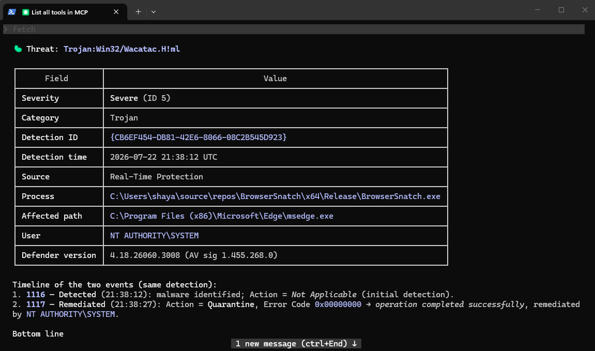
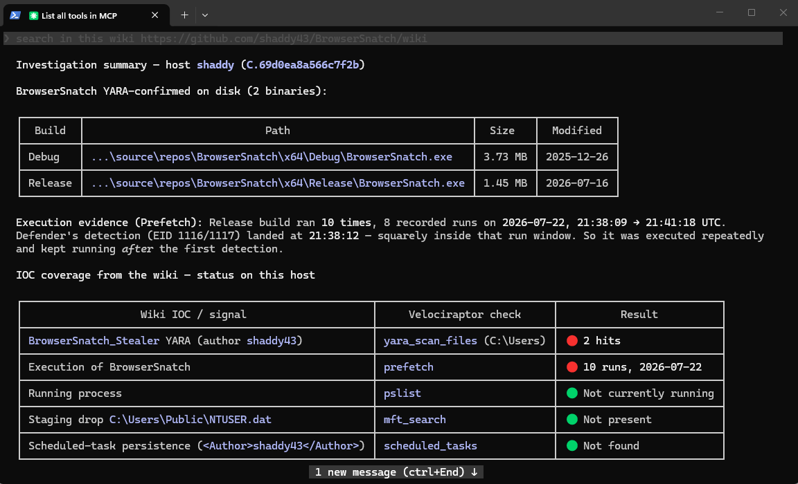
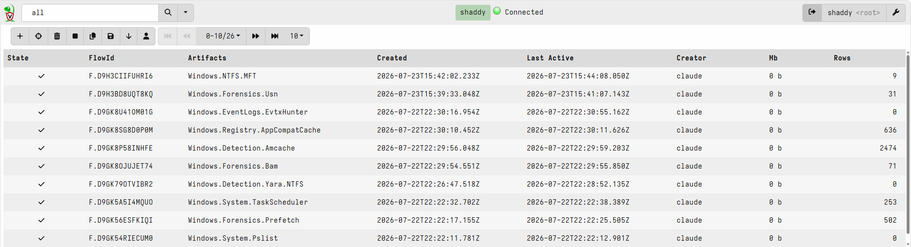

From Alert to Answer: AI-Driven DFIR with Claude Code & Velociraptor
How an AI coding agent became a digital-forensics operator, writing detection logic, running fleet-wide hunts, and triaging a live malware hit end to end.
The 90-second version
A Windows endpoint fired a Microsoft Defender alert for a browser credential stealer. Instead of pivoting between the Velociraptor GUI, a VQL cheat-sheet, a YARA repo, and a notepad full of findings, the entire investigation ran through a conversation with Claude Code (Anthropic's agentic CLI) wired to a Velociraptor server over the Model Context Protocol (MCP).
In one session the AI analyst:
- Wrote a custom Velociraptor artifact to extract Defender threat events.
- Launched a fleet-wide hunt and pulled the results.
- Fetched a public YARA rule from a project wiki and scanned the host with it.
- Corroborated execution across Prefetch, BAM, Amcache, Shimcache, and Event logs.
- Reconstructed a masquerade attack from the USN journal and Defender quarantine store.
- Produced a full DFIR report with a defensible conclusion.
This post walks through how that works, why the architecture matters, and where the guardrails are present.
The stack: three pieces that snap together
Velociraptor is an open-source endpoint DFIR platform. Its power comes from VQL (Velociraptor Query Language) and artifacts that are reusable, parameterized VQL bundles which lets you collect forensic data from one endpoint or an entire fleet on demand.
MCP (Model Context Protocol) is the open standard that lets an AI model call external tools through a well-defined schema. An MCP server exposes capabilities; an MCP client (here, Claude Code) discovers and invokes them.
Claude Code
is the agent. It reasons about the investigation, decides which tool
to call next, interprets the results, and chains steps together in the same way a human analyst
works a case, but at machine speed and without context-switching.
In this scenario, I used the Opus 4.8 model at High.
The glue is a Velociraptor MCP server that surfaces ~90 tools to the model:
client_info, list_clients, run_vql, collect_artifact, hunt_across_fleet,
get_hunt_results_tool, quarantine_host, kill_process, yara_scan_files,
yara_scan_process, windows_execution_prefetch, windows_execution_bam,
windows_execution_amcache, windows_scheduled_tasks, windows_event_logs, ...Each maps to Velociraptor operations, from raw VQL to OS-specific forensic collectors for Windows, Linux, and macOS. To Claude Code they look like any other function it can call.

The case: a browser stealer named BrowserSnatch
Step 1: Start from the alert
The investigation began with a fleet-wide question: where has Defender detected a threat? and how many systems have the same threat?
Velociraptor hunts don't run raw VQL directly, they run artifacts. And no Defender artifact existed. So the first thing the AI did was write one:
name: Custom.Windows.EventLogs.DefenderThreats
description: |
Microsoft Defender Operational log - returns ONLY events where a threat was
detected or acted upon (Event IDs 1006, 1015, 1116, 1117, 1118, 1119).
type: CLIENT
parameters:
- name: EvtxPath
default: C:\Windows\System32\winevt\Logs\Microsoft-Windows-Windows Defender%4Operational.evtx
sources:
- query: |
SELECT
System.Computer AS Computer,
System.TimeCreated.SystemTime AS EventTime,
System.EventID.Value AS EventID,
EventData AS EventData,
Message AS Message
FROM parse_evtx(filename=EvtxPath)
WHERE System.EventID.Value IN (1006, 1015, 1116, 1117, 1118, 1119)This is worth pausing on: the AI authored working detection logic, iterating through VQL parser errors (string-subscript syntax, field extraction) until the artifact validated the same debug loop a human would run, minus the Stack Overflow tabs.
Design insight surfaced by the agent: a "raw VQL hunt" isn't a thing in Velociraptor. Hunts require an artifact. The AI recognized the constraint and adapted its approach rather than failing, exactly the kind of tool-shaped reasoning that separates an agent from a chatbot.
Step 2: Hunt the fleet, read the results
With the artifact registered, launching a hunt was a single tool call:
hunt_across_fleet(
artifact = "Custom.Windows.EventLogs.DefenderThreats",
os_filter = "windows",
description = "Microsoft Defender threat detections across all Windows clients"
)
→ Hunt H.D9GJUNDMFB0EK (STARTED)The results came back with a single, high-severity hit on host shaddy:
| Field | Value |
|---|---|
| Threat | Trojan:Win32/Wacatac.H!ml (Severe) |
| Time | 2026-07-22 21:38:12 UTC |
| Process (initiator) | ...\source\repos\BrowserSnatch\x64\Release\BrowserSnatch.exe |
| Affected path (detected file) | C:\Program Files (x86)\Microsoft\Edge\msedge.exe |
| Action | Quarantine (success) |
The AI flagged two signals here. First, the initiating process was a
locally-built executable in a Visual Studio source\repos directory
not a drive-by download. Second, and more subtly, the detected file was
msedge.exe inside the Edge install path but the initiator was
BrowserSnatch. That mismatch is the tell: BrowserSnatch had self-copied into a browser
install path under a browser's executable name (a masquerade / process-impersonation
technique from the
tool's own IOC list
), and Defender's real-time protection caught the
masqueraded copy as it was written and quarantined it. The Path field is the
forensic proof that a rogue msedge.exe existed at that location, right up until
Defender removed it.

Custom.Windows.EventLogs.DefenderThreats artifact, the single Severe detection surfaced across the fleet.Step 3: Bring the detection rules to the endpoint
The BrowserSnatch project publishes a detection wiki containing YARA, Sigma, IOCs, and hunting queries. The AI fetched the YARA rule straight from the wiki and ran it against the host using Velociraptor's raw-NTFS scanner:
yara_scan_files(
client_id = "C.69d0ea8a566c7f2b",
FileNameRegex = "(?i)\.exe$",
PathRegex = "(?i)Users",
YaraRule = <BrowserSnatch_Stealer rule>
)
Two confirmed hits; the Debug and Release builds, both matching the high-fidelity author
string shaddy43. These are the source-repo builds, and they were
still on disk: Defender had quarantined the masqueraded msedge.exe copy
dropped into the Edge folder, not the original builds in the developer's source\repos
tree. So one BrowserSnatch instance (the browser-path masquerade) was auto-remediated, while the
parent binaries survived.

Step 4: Build the execution timeline
This is where an AI agent shines, running many collectors in parallel and reconciling them into a timeline. Mapping the wiki's IOCs to Velociraptor collectors:
| Question | Collector | Result |
|---|---|---|
| Did it run, and when? | windows_execution_prefetch | 10 runs, 21:38 - 21:41 UTC |
| Corroborate execution | windows_execution_bam | User shaya, 21:42:06 UTC |
| Deeper execution history | amcache / shimcache | No entry yet (lazy flush) |
| Command-line flags | Security 4688 | None (auditing disabled) |
| Running now? | windows_pslist | Not running |
| Staging drop file | windows_ntfs_mft_search | C:\Users\Public\NTUSER.dat absent |
| Persistence | windows_scheduled_tasks | No shaddy43 task |
| Masquerade copies | yara_scan_files (Program Files) | None (remediated) - see step 4.1 |
When collector output was too large to fit in the model's context, results were streamed to disk and queried with targeted searches, the agent adapting its own I/O strategy on the fly.
A telling detail the AI caught in the BAM data: DB Browser for SQLite ran ~30 seconds before the first BrowserSnatch execution, the classic workflow for opening stolen browser SQLite stores. That's the kind of adjacent-artifact correlation that turns raw data into narrative.
Step 4.1: Prove the masquerade three ways
The empty Program Files scan raised a question a good analyst always asks: is it absent because it never happened, or because something removed it? To settle it, the AI pulled two more artifacts.
The USN change journal showed a rogue msedge.exe
created and deleted five times in four minutes, a behavior no real browser
exhibits:
| # | FILE_CREATE | FILE_DELETE | Lifespan |
|---|---|---|---|
| 1 | 21:38:11.68 | 21:38:27.84 | ~16 s |
| 2 | 21:39:03.36 | 21:39:04.48 | ~1 s |
| 3 | 21:40:40.42 | 21:40:41.52 | ~1 s |
| 4 | 21:41:19.07 | 21:41:20.16 | ~1 s |
| 5 | 21:41:49.56 | 21:41:50.64 | ~1 s |
The first deletion landed at 21:38:27.84, matching Defender's quarantine event to
the second. The Defender quarantine store then held the captured sample:
| Item | Size | Created |
|---|---|---|
Quarantined payload (ResourceData\DB\DBE887…) | 1,448,144 B | 21:38:27.795 |
Detection entry (Entries\{80050C7B-…}) | 466 B | 21:38:27.795 |
| Resource metadata | 108 B | 21:38:27.795 |
The payload is 1,448,144 bytes; a 208-byte quarantine wrapper away from the
on-disk Release build (1,447,936 B). Defender even names quarantine resources by hash, handing us
the sample's SHA1 for free (DBE887282AFCCFEB1C5B3AAC9B0468BB9B3398E5).
Three independent artifacts, a Defender event, a USN delete, and a quarantine-store write, all stamped the same instant (
21:38:27). The agent also explained the one loose end: five drops but only one stored sample, because Defender deduplicates by content hash and only stores the first. That's not data retrieval; that's forensic reasoning.
Step 5: Conclusion
Every strand pointed the same way:
BrowserSnatch was built and executed ~10 times on 2026-07-22 by local user
shaya(author handleshaddy43), straddling Defender's detection. During execution it self-copied into the Edge install path asmsedge.exe(masquerade), which is precisely what Defender caught and quarantined, leaving the source-repo builds intact. No persistence, no staging artifact, and no live process remained. The profile is the tool's author testing it on a development host, not a third-party intrusion.
The session closed by writing a structured DFIR report to disk, complete with an appendix of every Velociraptor operation performed.
Why this architecture is a big deal for DFIR
1. The analyst never leaves the conversation. Writing VQL, launching hunts, scanning with YARA, parsing forensic artifacts, and authoring the report all happened in one place. No GUI-to-terminal-to-docs context switching.
2. The AI writes tooling, not just runs it. The custom Defender artifact was authored, debugged, and deployed in-session. When the right collector doesn't exist, the agent can build it.
3. Intelligence gets operationalized instantly. A YARA rule sitting in a wiki became a live endpoint scan in seconds. The distance between "threat intel" and "threat hunt" collapsed to a single conversation.
4. Parallelism and correlation. The agent fired multiple collectors at once and reconciled Prefetch + BAM + USN + Defender events into a coherent timeline, including subtle cross-tool signals like the SQLite-browser pivot.
5. Fleet scale is one parameter away. The same flow that triaged one host runs across an entire estate by changing an os_filter.
The guardrails (this matters)
An AI with access to a DFIR platform is powerful, which is exactly why the boundaries are explicit:
- Dangerous tools are opt-in.
run_vql(arbitrary server-side VQL) is disabled unlessENABLE_DANGEROUS_TOOLS=true. In this investigation it was off, so the AI couldn't run ad-hoc VQL or auto-register artifacts; a human pasted the artifact into the Velociraptor GUI.
It also depends on the permissions granted to the API the agent uses; in this case it didn't have artifact-creation permission. - Containment stays human-approved.
quarantine_hostandkill_processexist, but isolating a machine or killing a process is an outward-facing, hard-to-reverse action. The agent proposes, the human disposes. - Read-heavy by default. The bulk of the workflow, hunts, YARA scans, artifact parsing etc is non-destructive forensic collection that changes nothing on the endpoint.
- Everything is logged and reproducible. Hunt IDs, flow IDs, and an operations appendix make the AI's actions auditable after the fact.
The model is fast and tireless, but the destructive verbs remain gated behind human intent.

Takeaways for practitioners
- MCP turns any capable platform into an AI tool surface. Velociraptor was not built for AI, MCP made its ~90 operations callable by an agent without changing Velociraptor itself.
- Agents are strongest when the domain has good primitives. VQL, artifacts, and hunts are clean, composable building blocks and ideal for an agent to orchestrate.
- Keep humans on the destructive path. The value is in acceleration of investigation, not autonomous response. Gate containment and arbitrary execution.
- Detection content is now executable intent. Publishing YARA/Sigma/IOCs in a machine-readable place means an agent can pick them up and run them the moment they're needed.
The endpoint told us something was wrong. An AI analyst, wired to the right tools, took it from alert to answer and wrote up the report on the way out.
Appendix: the YARA rule that hit
This is the BrowserSnatch_Stealer signature the agent pulled from the project's
detection wiki and ran on the host. It flagged both on-disk builds on the high-fidelity
author / project markers (shaddy43, BrowserSnatch). Source:
BrowserSnatch Wiki - YARA Rule;
full detection set (Sigma, IOCs, hunting queries) in the
BrowserSnatch Detection Wiki.
rule BrowserSnatch_Stealer {
meta:
description = "Detects the BrowserSnatch browser data extraction tool"
author = "shaddy43"
date = "2026-07-15"
reference = "https://github.com/shaddy43/BrowserSnatch"
mitre_attack = "T1555.003"
severity = "Critical"
strings:
// High-fidelity author / project / drop-file markers
$h1 = "shaddy43" ascii wide
$h2 = "BrowserSnatch" ascii wide
$h3 = "NTUSER.dat" ascii wide
// Command-line flags
$s1 = "-greed" ascii wide
$s2 = "-app-bound-decryption" ascii wide
$s3 = "-recalibrate" ascii wide
$s4 = "-service" ascii wide
$s5 = "-cookies" ascii wide
$s6 = "-bookmarks" ascii wide
$s7 = "-history" ascii wide
$s8 = "-pass" ascii wide
// Snatch / stealer + browser store references
$g1 = "snatch" ascii wide nocase
$g2 = "stealer" ascii wide nocase
$b1 = "Login Data" ascii wide
$b2 = "Local State" ascii wide
$b3 = "logins.json" ascii wide
$b4 = "key4.db" ascii wide
condition:
uint16(0) == 0x5A4D and // PE file
filesize < 5MB and
(
$h2 or // "BrowserSnatch" alone is definitive
($h1 and $h3) or // author + Public NTUSER.dat drop marker
(3 of ($s*)) or // three or more tool flags
((1 of ($g*)) and (3 of ($s*))) or
((1 of ($g*)) and (2 of ($b*)) and (1 of ($h*)))
)
}References
- Claude Code: Anthropic's agentic CLI (the analyst): claude.ai/code
- Velociraptor MCP server: the bridge exposing Velociraptor to the model: github.com/mgreen27/mcp-velociraptor
- Velociraptor: open-source endpoint DFIR platform: github.com/Velocidex/velociraptor
- BrowserSnatch: the browser stealer analyzed: github.com/shaddy43/BrowserSnatch
- BrowserSnatch Detection Wiki: YARA, Sigma, IOCs, and hunting queries: github.com/shaddy43/BrowserSnatch/wiki
Claude Code (agent) · Velociraptor (DFIR platform) · Model Context Protocol (tool bridge). Case data is from a controlled test host; the "malware" is an open-source research tool run by its own author.